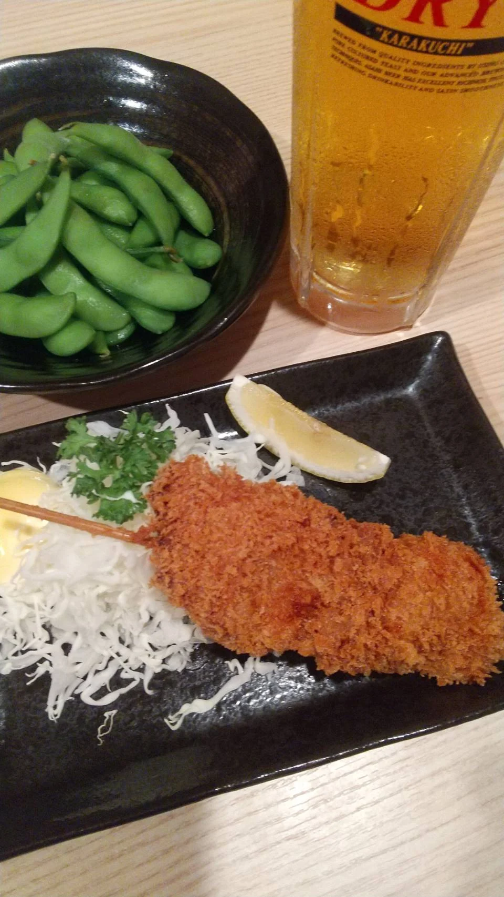
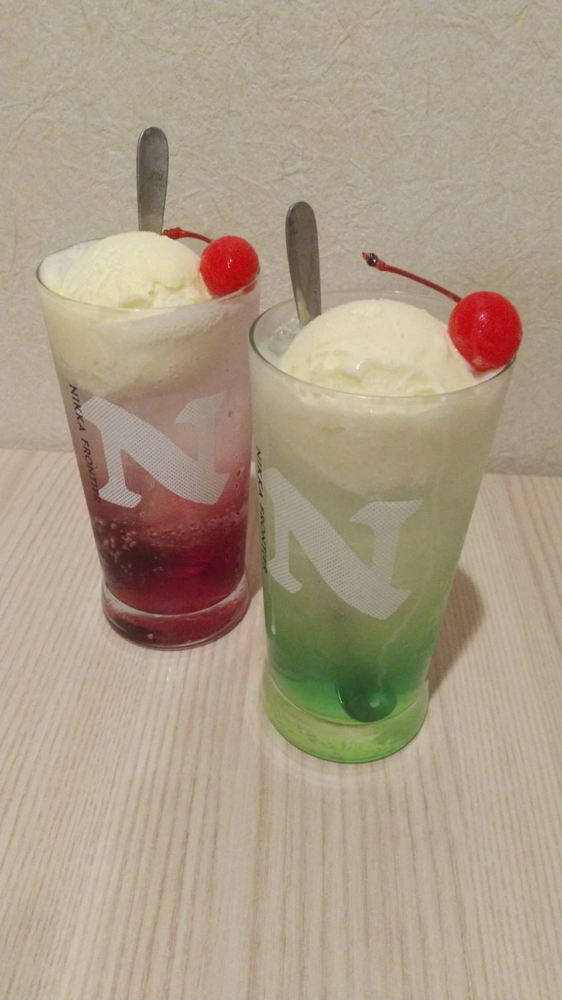

串揚げと魚 ろはん
17:00–22:00 ／ 月・日 定休
OUR MENU
好きなものを、好きなだけ。今夜の一杯とともに。

A LITTLE DRINK, A GOOD EVENING
生ビール中 1杯・豚ヒレ串 1本・枝豆
800円（税込）
一日の終わりに、ひと息。お仕事帰りにも、二軒目にもどうぞ。
価格はすべて税込です。仕入れや季節により、内容が変わる場合がございます。
01
02
三種盛りは、単品のお刺身からお選びください。写真は盛り付けの一例です。
03
9月〜5月の季節限定
04
05
06
お茶漬け・おにぎりは梅・鮭・明太子からお選びください。
メニュー掲載情報：2026年9月確認。最新のお品書き ↗
DRINKS
ビール、日本酒、焼酎、ハイボール。その日の気分で、お楽しみください。

RESERVATION
お席のご予約は、ネットまたはお電話で。おひとりの一杯も、大切な人との食事も。
全席喫煙可のため、20歳未満の方はご入店いただけません。